Santuario Ibérico de “El Pajarillo”
Fondo Audiovisual 2 · Planta Alta (Sala Expositiva)
Planta 1 · Bucle Continuo TV 65"
Toca la pantalla o pulsa cualquier tecla para activar el audio en esta sala.

Fondo Audiovisual 2 · Planta Alta (Sala Expositiva)